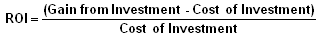

A performance measure used to evaluate the efficiency of an investment or to compare the efficiency of a number of different investments. To calculate ROI, the benefit (return) of an investment is divided by the cost of the investment; the result is expressed as a percentage or a ratio.
The return on investment formula:
In the above formula "gains from investment", refers to the proceeds obtained from selling the investment of interest. Return on investment is a very popular metric because of its versatility and simplicity. That is, if an investment does not have a positive ROI, or if there are other opportunities with a higher ROI, then the investment should be not be undertaken. Keep in mind that the calculation for return on investment and, therefore the definition, can be modified to suit the situation -it all depends on what you include as returns and costs. The definition of the term in the broadest sense just attempts to measure the profitability of an investment and, as such, there is no one "right" calculation.
For example, a marketer may compare two different products by dividing the gross profit that each product has generated by its respective marketing expenses. A financial analyst, however, may compare the same two products using an entirely different ROI calculation, perhaps by dividing the net income of an investment by the total value of all resources that have been employed to make and sell the product.
This flexibility has a downside, as ROI calculations can be easily manipulated to suit the user's purposes, and the result can be expressed in many different ways. When using this metric, make sure you understand what inputs are being used.
{kind=link}